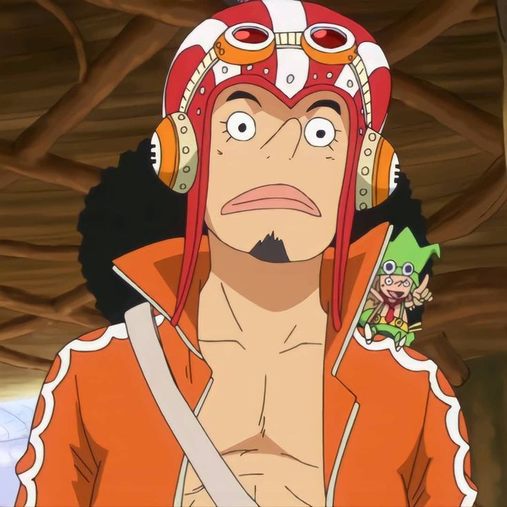

To play you have to choose a team. There are two teams Pirates and Marines this will decide on what island you start on. You can change this choice whenever you want. Then follow the Tutorial and fight the npcs. Once you get enough money go buy your first sword. Then go fight more npcs once you get to level 20 you can go to the jungle island and you just need to keep gaining EXP/XP to get levels.

Image From: Roboflow Universe By: Unknown